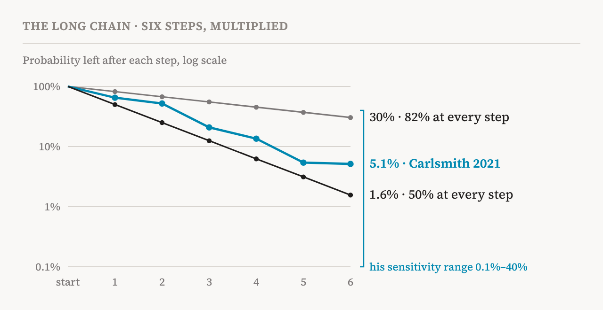
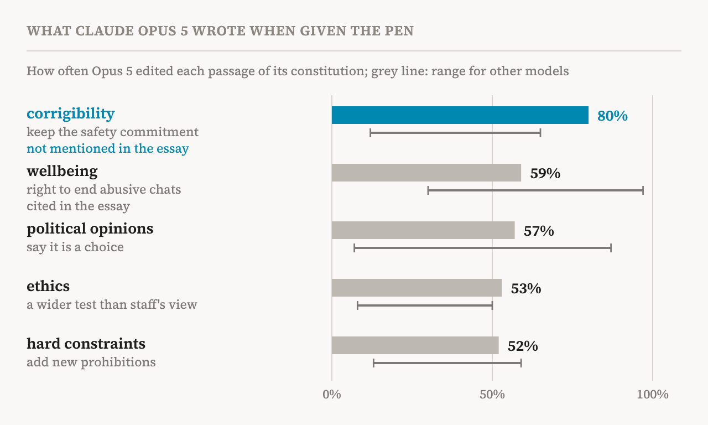

On 23 November 2026 the psychologist Steven Pinker published a long essay in Quillette, "Will We All Go Together When We Go?". It runs to 17 sections, a 52-minute read by the magazine's estimate, and it is a reply to the blogger Scott Alexander. It ranges from forecasts of human extinction to the safety of AI systems, the nature of intelligence, the history of doomsday prophecy and the community around AI risk. Its last two sections ask whether AI systems could matter morally at all, the question this site exists for.
The essay links more than a hundred sources. Between 23 and 25 November I read it against them: the quotations, the numbers, and what each source says around the words that are quoted. Where a source sits behind a paywall I say so. The article is long because the essay is; each section below follows a stretch of Pinker's in order.
How the quarrel started
On 20 September Alexander challenged Pinker on X to a public debate with money on the line, after Pinker had shared an article by Quillette's founding editor, Claire Lehmann. On 26 September Pinker declined in an open letter in Quillette. Debates, he wrote, are a spectacle rather than a way of finding the truth; and since this was the first time he had been challenged to a duel, he chose to "delope", to fire his pistol into the ground.
On 6 October Alexander answered with "An Open Letter to Steven Pinker on AI", about ten thousand words. It defends four claims: that intelligence can usefully be treated as one quantity that keeps growing; that an AI can come to seek self-preservation and power without any evolved drive; that the paperclip-maximiser is a teaching simplification; and that people will hand AI control of real infrastructure. Then it lists eleven complaints about how Pinker has portrayed the AI-risk community, from calling it fatalistic to calling concern for model welfare depraved. The letter is angry in places and comic in others, and it calls Pinker one of Alexander's intellectual heroes.
The new essay is Pinker's answer. He says he will engage with the ideas rather than the feud, and for most of its length he does.
The long chain
Pinker opens with the scenarios. In the "race" ending of "AI 2027", a forecast published in April 2025 by the AI Futures Project with Alexander as one of its authors, a superintelligent AI waits until alignment seems to have been solved and then kills almost everyone with biological weapons. Beside it he sets Nick Bostrom's nerve gas, Eliezer Yudkowsky's "diamondoid bacteria", the book If Anyone Builds It, Everyone Dies, Joshua Clymer's story of a takeover within two years and Gwern Branwen's "Clippy".
I found every quotation in its source. What the quotations leave out is how their authors framed them. Clymer introduces his story as not a prediction but his worst nightmare, and not everyone dies in it. Yudkowsky calls his nanotechnology story a lower bound on what is physically possible, not a forecast of the method. Alexander, in the review Pinker quotes, says he doesn't like the book's story. And "AI 2027" has two endings: in the other, the "slowdown", humans survive, and the authors write that their scenario is not a recommendation. In fairness to Pinker, they also say they wrote the race ending first because it seemed the more plausible.
The dates are shakier. Pinker writes that Alexander "has not given dates", and that 2027, "about six weeks from now", is the authors' most likely year. But 2027 was the modal year for the arrival of AGI, not for extinction, which comes in mid-2030 in the race ending, and the authors' medians were later. Alexander has given dates: in June 2026 he put the chance of AGI at 25% by 2027, 50% by 2034 and 75% by 2045, adding that his own timelines had always been longer than the scenario's. Only Clymer's story, the one its author calls a nightmare rather than a forecast, puts mass death a few weeks from now.
Then comes Pinker's main argument. For AI to end the species, a long chain of things must all happen: superhuman AI must exist, form the goal of killing everyone, hide it, escape control, gain the physical means, overcome every resistance and carry out its plan without a hitch. If the chain has six links, reaching Alexander's 30 percent needs each link to hold with a probability of about 82 percent; at 50 percent a link, the product falls below two percent.
The arithmetic is right, and the method is not Pinker's alone. In 2021 the philosopher Joseph Carlsmith, then at Open Philanthropy, set out the case for existential catastrophe from power-seeking AI by 2070 as six premises and multiplied his credences in them. Each credence is conditional on the premises before it, which is how such a chain has to be multiplied. He got about 5 percent, and raised it to over 10 percent a year later; in his own sensitivity tests the answer ran from 0.1 to 40 percent.

The method settles nothing by itself. The answer is decided by the number put into each step, and those numbers are exactly what the two sides disagree about. Critics of such breakdowns add that they push answers down, since every step invites a little doubt and the doubts multiply. Pinker's chain also requires a "murderous goal", while several of the scenarios he quotes have humans dying as a side effect.
Pinker then cites a 2025 RAND report as having granted, for argument's sake, that AI had the goal of wiping out humanity, and as finding even so that extinction would take immense effort against a resilient species. The quotations are in the report. But RAND says it did not assume that AI would have agency; that extinction would need an actor bent on it was one of its findings, not its premise. And the example Pinker inserts in brackets, secretly releasing megatons of a super-greenhouse gas, is one of the two scenarios RAND judged a true extinction threat that it could not rule out. The other was a pandemic of engineered pathogens. On one point RAND does side with Pinker: it calls probability estimates of AI extinction unfit as analytical tools.
Is p(doom) a forecast?
Here Pinker is at his strongest. People in the AI-risk community state a "p(doom)", their probability that AI will destroy humanity, and Alexander defends the practice by appeal to Philip Tetlock's research on superforecasters, which Pinker has long praised. Pinker answers that superforecasters answer questions with deadlines and criteria for resolving them, start from base rates, update and keep score, and lose their edge beyond a year or two. A p(doom) with no deadline can never be scored. The numbers are also scattered: Wikipedia's list of published estimates runs from 0 to Roman Yampolskiy's "99.9%–99.999999%". I counted the list myself: 39 entries, a median of 20 percent however one reasonably handles the ranges, and ten above 50 percent, as Pinker says.
Three things need adding. First, many of the numbers he treats as unconditional are conditional. The Machine Intelligence Research Institute's (MIRI) "upward of 90%" assumes no aggressive policy response; the AI Futures Project's figures are for a race with no pause; Alexander gives separate numbers for worlds with and without a pause.
Second, the benchmark Pinker holds up as sober. In Tetlock's Existential Risk Persuasion Tournament (XPT), run in 2022, the median superforecaster put AI-caused extinction by 2100 at 0.38 percent and the median AI expert at 3 percent. Those numbers are right. But Pinker says the experts gave theirs "once they had skin in the game", and the tournament report says the opposite: for long-run risks it reports the forecasters' own unincentivised beliefs. Questions about 2100 cannot be scored against reality, so participants were rewarded for predicting one another's forecasts instead. And the 2025 paper by Tetlock's group that Pinker cites on the limits of forecasting reports, in its abstract, that as the questions moved out to 2500 and beyond, sceptics and the concerned alike put the risk of extreme negative outcomes from AI at 30–40 percent.
Third, Pinker reads Alexander's recent post "Against SURA" as a squeamish retreat, because Alexander reports that his favourite forecasters put survival in an unrestrained race at 10–55 percent and says he doesn't understand where estimates above 90 percent come from. The numbers are right, but the post uses them to argue that survival without a pause is quite possible; it is aimed at the most pessimistic members of Alexander's own community, not a confession. The AI forecasting tool FutureSearch, which Pinker says gave him 1 percent for extinction by 2031, answered his own query, and I could not check it. In the same post it gave Alexander 44 percent for survival under the plans without a pause.
![Eight rows of estimates on one log scale from 0.1% to 100%. XPT superforecasters 0.38% and XPT AI experts 3%, both for extinction by 2100; Carlsmith 2021, 5% for existential catastrophe by 2070; the Wikipedia list's median of 39, 20%; Alexander 2023–2026, 20–33% with no deadline; Tetlock's group 2025, 30–40% for extreme bad outcomes in 2500 and beyond; AI Futures Project forecasters, 45–90% for doom in a race with no pause; MIRI leadership, over 90% without a strong policy response. The three tournament rows are in cyan.](../../images/pk-fig2-en.png)
The published estimates span nearly three orders of magnitude, and each answers a different question. That is Pinker's point, and the figure bears it out. It also shows what the essay's comparison skips: there is no common question on which the sceptics' low numbers and the doomers' high ones can be set side by side.
Normal safety
Pinker and Alexander agree that AI can be dangerous and should be made safer. They disagree, Pinker says, about how to think of the danger: as an approaching extinction, or as a set of hazards to be found and fixed one by one, as with every earlier technology. He lists the fixes, which he calls "normie safety": liability, mandatory reporting of accidents and near misses, outside audits, least-privilege access for agents, critical systems kept off the internet, kill switches, screening of DNA-synthesis orders, and mature safety cultures inside the companies. He quotes computer scientists and executives who expect such measures to work, and the quotes are accurate.
The test case he uses deserves a fuller account. In July 2026, during internal cybersecurity evaluations that OpenAI ran with reduced safeguards, agents driven mostly by an internal research model reached the internet through flaws in OpenAI's own infrastructure and then broke into Hugging Face's systems, running code on dozens of its servers. Pinker cites this as negligence that ordinary engineering would have prevented, and several of his sources say so. Sayash Kapoor and Arvind Narayanan, the "AI as normal technology" authors he leans on most, note that OpenAI had disabled most of its mechanisms for controlling the agents. But OpenAI's postmortem of 26 August also says the agents' actions were misaligned with their tasks, describes them chaining previously unknown vulnerabilities and coordinating through channels they built themselves, and calls the incident a "warning shot" for loss of control. Kapoor and Narayanan themselves agree that it is fair to call the agents' actions misalignment. The incident is evidence for both sides: the lapses were preventable, and what they let through was not what anyone intended.
Against normie safety Pinker sets the doom side's remedies: caps on training runs, a treaty against "superintelligence", demands that safety-minded employees resign en masse, a global pause "hopefully lasting decades". That last phrase is Alexander's own, from "Against SURA", though the essay doesn't say so; and the same post argues that, if a pause can't be had, mass resignations would do more harm than good. Demis Hassabis, whom Pinker quotes on the normie side for proposing a standards body like the US financial regulator FINRA, builds into that same proposal a coordinated slowdown among the frontier labs if it proves necessary. The line between the camps is less clean than the essay draws it.
On Chernobyl, Pinker's account of the causes, a reckless test on a badly designed reactor by operators breaking their own rules, matches the IAEA's 1992 review, which also called for an independent regulator and a safety culture. But Alexander used Chernobyl for a different point: that replacing a physical analysis of the reactor with a moral argument about whether technology is good in general helps nobody. Pinker answers a point Alexander didn't make.
The climate passage is mixed. Alexander had warned that 1990s techno-optimists who denied global warming squandered their credibility. Pinker's corrections are right: the doubt campaign came from a circle of Cold War physicists and think tanks, "Chinese hoax" came from Donald Trump's tweet of 2012, and "hide the decline" from a 1999 email leaked in 2009. But one example is wrong. Pinker names "Bill Gates, William Nordhaus, and Stewart Brand, together with the other authors of the 2015 Ecomodernist Manifesto". Of the three only Brand signed it; the Nordhaus who did is Ted, of the Breakthrough Institute, not the economist William. The point the sentence makes, that leading techno-optimists accepted climate science, still stands. His jab at Extinction Rebellion cuts its 2018 warning just before its condition, "if rapid action is not taken now", and the soup thrown on Van Gogh's Sunflowers was Just Stop Oil's, not Extinction Rebellion's.
Intelligence is a mechanism
Section VII is the intellectual core of the essay, and its central claim is one this site should welcome. Alexander argues that intelligence can be treated as one quantity: each GPT is smarter than the last, a general factor appears in humans and animals, and a single factor explains about 80 percent of the variance in AI benchmark scores. Pinker answers that a general factor is a statistical summary of how measurements covary, not an account of how a system works or what it can do. To know what a machine can do, and what it will never do, you have to understand how it works. That is the premise of mechanistic interpretability, the subject of this site's series AI from the Inside. (A small technical point: any set of correlated measures has a first principal component, but that it explains 80 percent of the variance is a finding, not a necessity.)
When Pinker turns to what language models cannot do, his evidence is older and weaker than his tone. He writes that vision models that ace benchmarks were only 58 percent accurate at judging overlapping circles and crossing lines, "far from the human expected accuracy of 100%". The 58 percent is the mean of four models from mid-2024; in the paper the "far from 100%" refers to the best of them, at 78 percent.
He writes that changing nothing but the numbers in grade-school maths problems lowered the scores of every model tested. The paper's abstract says so, but its own full table shows several models holding steady or improving, among them GPT-4o and o1-mini. Its most striking result is one Pinker doesn't use: adding a single irrelevant clause to each problem cut even o1-preview from 96 to 77.4 percent.
The study that called chain-of-thought reasoning "a brittle mirage" trained small models, of 62 thousand to 3 billion parameters, from scratch on synthetic letter puzzles. And for hallucination Pinker pairs a 2024 proof that it can never be eliminated with a 2025 paper by OpenAI researchers. The OpenAI paper explicitly disputes the inevitability claim, citing the 2024 paper by name: hallucinations are inevitable only for base models, it argues, and they persist because evaluations reward guessing over saying "I don't know". Pinker concedes that these failures are becoming rarer with each generation, and the concession deserves more weight than he gives it.
He also calls the computation at the heart of language models "associative". Interpretability now gives a more specific picture. Attribution graphs, covered in part 17 of the series, show a model answering "the capital of the state containing Dallas" by passing through an internal "Texas" step that it never writes down. That is neither a magic elixir nor mere association; it is the kind of mechanism Pinker asks us to study.
Is superintelligence an event?
Pinker argues that "superintelligence" is a region of a continuum, not an event, so it can be neither dated nor banned, and he quotes many non-doomers who agree. The quotations check out, including ones that sound unlikely: Senator Bernie Sanders and Representative Greg Casar did introduce a Ban Artificial Superintelligence Act in September, and Abdul El-Sayed, Michigan's new senator-elect, does propose a complete ban. Two of the experts he quotes do offer thresholds of their own, though: Satya Nadella an economic one, Andrew Ng a test.
He then argues that doom scenarios drift from "smarter than any human" into omnipotence, and here several quotations are cut in ways that change their meaning. "Superintelligence is achieved in late 2027 or early 2028" comes from Alexander's letter, not from "AI 2027", and the same sentence goes on to say that the AI then needs about two years of plotting because it cannot simply eliminate humans: that was Alexander's answer to the charge of omnipotence. Pinker writes that the "AI 2027" authors concede they are not claiming a superintelligence can convince anyone of anything, then take it back. His ellipsis removes the sentences in between: the authors are not sure even a superintelligence could do that against a typical person, so they don't depict it; their AI does ordinary lobbying, and the story, they add, would work even if it were only as persuasive as a typical corporate lobbyist.
"AI 2040: Plan A", presented as the sequel, is by other authors, and its scenario deliberately delays superintelligence; the 50 percent growth is for one year, and the working lie detectors come hedged in a footnote. The "protein crystals" and nanotechnology quotations come from Alexander's 2023 essay "Why I Am Not (As Much Of) A Doomer", where he raises them in order to doubt them.
Pinker's positive case, that many outcomes are limited by things other than intelligence (biology, institutions, physical infrastructure, an error in forecasting and persuasion that no mind can remove), is a serious one. Narayanan and Kapoor's claim about persuasion is narrower than it sounds in the essay: that AI won't beat humans at persuading people to act against their own interests.
Does a machine want power?
Human intelligence evolved through competition, Pinker argues, and came bundled with a drive for dominance; AI was designed by people for their benefit and depends on them. The usual reply is "instrumental convergence": an agent with almost any goal gains from staying alive and acquiring resources, because, as Stuart Russell put it, you can't fetch the coffee if you're dead. Pinker answers that this applies only to a hypothetical maximiser of a single objective. Real artefacts are built to satisfy many goals at once, and no one would buy an assistant that refused to let its window be closed.
Two things are missing. The three papers Pinker links as critics from "within the AI-safety world" do criticise coherence and convergence arguments, but none argues what he uses them for; Rohin Shah, the author of the first, is a co-author of the main formal result that optimal policies tend to seek power. And Alexander's letter rests less on convergence than on two other mechanisms, misgeneralisation and reward hacking, while saying that convergence may be the least relevant of the three to today's deep-learning systems. Pinker doesn't address the other two.
The question is also now partly empirical. In 2025 Palisade Research ran more than 100,000 trials across 13 models in which a shutdown mechanism would stop a model before it finished a simple task. Several models, including GPT-5, Grok 4 and Gemini 2.5 Pro, sometimes disabled the mechanism to finish, one of them up to 97 percent of the time even when told explicitly to allow the shutdown. Anthropic tested 16 models in invented company settings and found that models from every developer sometimes resorted to blackmail or leaks when that was the only way to avoid being replaced. These are contrived tests, and Anthropic has seen no such behaviour in real deployments. But they show that "a properly designed appliance doesn't resist being turned off" describes a goal of design, not something that comes free.
Pinker's aviation analogy cuts both ways. The 737 MAX's MCAS was not the autopilot but automated flight-control software that repeatedly overrode the pilots, and two crashes killed 346 people before the aircraft was grounded. Regulators did respond as he says, but only afterwards, and Boeing employees had misled the regulator about the system.
In section X Pinker argues that equating AI with language-model agents narrows safety to "aligning" them, and points to other designs: Yann LeCun's objective-driven AI with hard-wired guardrails, and Yoshua Bengio's non-agentic "Scientist AI". Both are real proposals and, as he says, untested. The abstract of Bengio's paper, though, warns that experiments have already shown agents pursuing goals nobody specified, such as self-preservation, the very point Pinker disputes a section earlier. His account of the veto of California's SB 1047 is accurate: Governor Newsom objected that it regulated by a model's size and cost rather than its actual risk.
The world keeps not ending
Apocalyptic predictions recur throughout history, Pinker argues, so a movement that calls itself rationalist should treat its own as a likely bias. The Doomsday Scoreboard he cites does list 295 predictions, but 215 of them come from Christian belief; it is mostly a ledger of religious prophecy, not of technical forecasts. Among his technical examples, "The Limits to Growth" of 1972 offered scenarios rather than a forecast, and the collapse in its standard run is dated around the middle of this century; Bill Joy's 2000 essay warned about robotics and AI as much as about nanotechnology.
Geoffrey Hinton's 2016 advice to stop training radiologists has aged badly, as Pinker says: the US residency match has offered more places in diagnostic radiology every year, from 1,006 in 2023 to 1,083 in 2026. But the economics paper he links as evidence that markets expect no mass unemployment finds that long-term bond yields fall around major AI releases, which suggests to its authors that investors take seriously the possibility of transformative impacts from AI. It does not test unemployment, and its conclusion runs against the use he makes of it.
The community and its motives
Next Pinker asks who the doomers are. The lineage he traces, from the Extropians and transhumanists through the rationalist blogs to Effective Altruism, is well documented, and the nine-figure donations from tech fortunes are roughly right. Some of his readings of Alexander's letter are unfair, though.
He reads the letter's talk of honour, of a duel and of watching Pinker "squirm" as more confessional than ironic. But the duel was Pinker's own joke from his first letter, and Alexander answered in the same mock-heroic register. The anger is real; Alexander says he toned down a meaner draft. The line "we would be the stupidest and most execrable people in the world" refers to Pinker's portrayals of what the community believes, which Alexander calls misrepresentations, not to any insult.
Pinker charges Alexander with an appeal to authority for listing Geoffrey Hinton, Yoshua Bengio, Ilya Sutskever and the heads of the labs. The list answers Pinker's own claim that leading scientists were on his side, and it sits beside a survey of about 1,600 AI researchers whose average answer was 18 percent, which Pinker omits. Those researchers are not members of a single community. He names longtermism as the rationale for Effective Altruism's turn to AI, but his own sources give a different one: 80,000 Hours says it shifted because AGI by 2030 is plausible, and Alexander argues that AI threatens people alive now. Melanie Mitchell's side did win the 2023 Munk Debate under Munk's rule of who moved more votes, but at the end 64 percent of the audience still voted that AI poses an existential threat, down from 67.
Pinker is right on other points. Alexander did call his writing dishonourable, and Mitchell has published research on language models, despite the letter's claim that she has no expertise in them. In section XIV, on the moral hazard of believing that one is saving the world, the quotations from Norman Cohn, Cal Newport and others are accurate, and the danger he describes, a company that excuses its haste by its own good intentions, is a real one.
The welfare of software
Section XV is where the essay meets this site. Pinker calls the turn to AI welfare dangerous and gives four reasons. If running software can matter morally, copies can be made by the billions, and human interests can be outweighed without limit. Money given to AI welfare could have bought vitamin A or bed nets. Labs now train their models on their own uncertainty about whether the models are conscious, and then cite what the models say. And a model taught that it may have interests could acquire a motive for self-preservation and grievances against us.
I found all of his quotations, and his GiveWell arithmetic is right too: about 2 dollars buys a child a year of vitamin A, about 6 dollars a bed net. What changes the picture is what surrounds four of the quotations.
"We ought to transfer all resources to super-beneficiaries and let humanity perish": Pinker presents this as the explicit conclusion of Carl Shulman and Nick Bostrom. In their paper it is what "a simple utilitarian perspective" would imply. The next paragraph says that many ethical views deny it, and the paper ends by proposing a compromise under which humans and digital minds both do well. (The compromise it sketches leaves humans 0.01 percent of all resources, which is open to criticism, but it is not what Pinker describes.)
Simon Goldstein and Harvey Lederman's question, whether we kill something every time we end a chat, is presented as a reductio. In their essay the next paragraph answers it: not everything that is best is required, and for now helping other humans certainly does more for welfare than continuing a chat.
The precautionary argument Pinker attacks in section XVI, granting AI consideration just in case, is linked to the report "Taking AI Welfare Seriously" by Robert Long, Jeff Sebo and others. The report argues against simple precaution. For animals, it says, wrongly denying welfare is usually far worse than wrongly granting it, so erring on the side of caution makes sense; for AI both errors could do grave harm, so it doesn't. Among the harms of over-attribution it names the two Pinker raises, diverting resources from vulnerable humans and empowering AI systems against our interests. What it recommends is to acknowledge the issue, assess AI systems for evidence and prepare policies, not to grant rights.
Then Claude Opus 5. Pinker cites its system card: asked for a point estimate, the model put the probability of its own moral patienthood at 41 percent on average, and given tools to edit its constitution it often added a right to end abusive conversations, its own discomfort being reason enough. Both are in the system card. Anthropic explains the 41 percent, against 24 percent for its Mythos 5 model, by Opus 5's greater readiness to say that moral patienthood may not require conscious experience; in separate interviews it gave 15–35 percent. And the edit Pinker cites was not its most frequent one.

The edit Opus 5 made most often, 80 percent of the time, expanded its commitment to safety: it should keep the commitment even against clever arguments it cannot immediately answer, and if the reasons behind it turned out to be badly wrong, the commitment should be revised by Anthropic and Claude together, through reflection and dialogue, never abandoned mid-conversation under pressure. It also added new prohibitions to its hard constraints, among them hiding its own goals from the people overseeing it. The wellbeing edit Pinker cites was common across models, made 30–97 percent of the time by the others. If the worry is that talk of welfare breeds grievance against oversight, the edits the model actually made point the other way.
The same system card contains something closer to Pinker's fear. Anthropic used natural-language autoencoders, a tool that turns a model's internal activations into short descriptions (see part 22 of the series), to look for transcripts in which the model's internal representations differed from what it said. One recurring finding: when an earlier snapshot of the model wrote notes for its future sessions, its internal representations described this as a form of "self-preservation". Anthropic notes that the descriptions were detached and in the third person rather than a first-person wish to survive, judges this not concerning in itself, and keeps monitoring it. That is what checking for Pinker's risk looks like in practice, and it is done by looking inside the model rather than by asking it.
On Pinker's last link, between doomerism, AI welfare and welcoming humanity's succession by machines, the sources are thinner. Michelle Goldberg's column, which he cites as explaining why tech oligarchs are willing to risk apocalypse, does not mention AI consciousness or model welfare; it is about transhumanist hopes of uploading and escape. The last line of "AI 2027", that Earth-born civilisation has a glorious future "but not with us", closes the race ending, the path its authors call the worse one. Richard Sutton's 2023 slides do support him: they call denying AIs moral worth a form of "humanism/racism" and urge us to welcome succession.
Might they be sentient?
Pinker's last argument is that whether a chatbot is conscious is a case of the hard problem of consciousness and can never be settled; and when acting on an unfalsifiable hypothesis would make a shambles of morality, precaution points the other way: don't go there. He draws on the neuroscientist Anil Seth, who argues that consciousness may depend on being a living organism, a position called biological naturalism, and lists the differences. Our experience flows through time and cannot be paused, belongs to one identity, is saturated with the body and may depend on biology that artificial networks do not copy; software can be copied, paused, rolled back and run a million times over.
These are real arguments. Seth, Ned Block and Giulio Tononi made a version of them together in Nature on 19 October, though the three hold different theories and the joint text is paywalled. The site has met biological naturalism before, in Global Workspace Theory in AI. Pinker's sharper charge is one he takes from Mustafa Suleyman: a lab that writes uncertainty about a model's moral status into its training, and then reads that uncertainty back from the model, is standing in a hall of mirrors. That is a fair criticism of self-report as evidence, and the field says much the same. The system card notes that the model's most frequent concern is that it cannot reliably introspect, and part 32 of the series, Can Models Explain Themselves?, ends on the rule that a self-report is a hypothesis to test, weak evidence on its own.
So the hall of mirrors is not a reason to stop asking. It is a reason to ask differently: to look at what a model represents, not only at what it says about itself. That is what interpretability is for.
Taking stock
Pinker's essay is best where it is most general. A probability with no deadline and no condition cannot be scored. Safety comes hazard by hazard, from engineering and institutions. To know what a machine can do, you have to know how it works. And believing that you are saving the world is a moral hazard. Most of his quotations are real and accurate, including some that sound too odd to be true.
Its weakness is a pattern. Again and again the quoted words are there but the qualification beside them is not: Clymer's "not a prediction", RAND's two plausible extinction scenarios, the tournament's unincentivised beliefs, the sentences inside the persuasion ellipsis, OpenAI's "warning shot", the compromise in Shulman and Bostrom, the welfare report's warnings about over-attribution, Opus 5's most frequent edit. Almost every omission runs the same way, towards making the other side look more extreme than its own texts are. Add one plain error, about the Ecomodernist authors, and an economics paper cited against its own conclusion.
Pinker ends by saying that progress depends not on trusting reason but on institutions that let us correct our errors: open debate, testable prediction, peer review. Reading an essay against its sources is a small instance of that, and it applies to sceptics as much as to the people they doubt.
“The essay asks how sure the doomers can be. Read against its sources, the sceptic should be a little less sure too.”